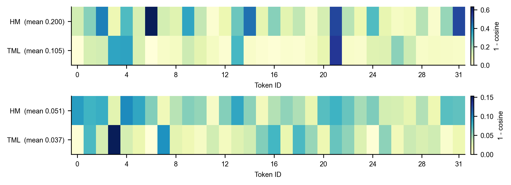
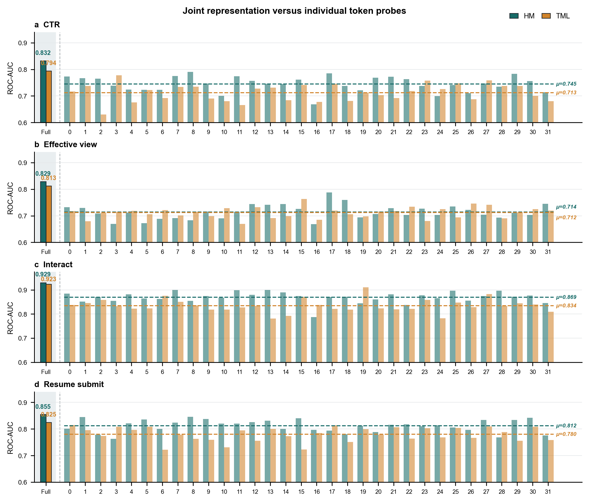
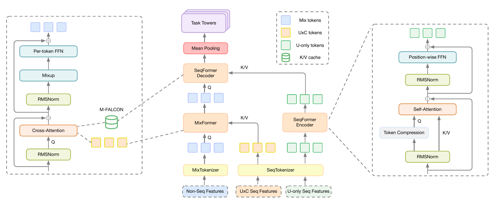
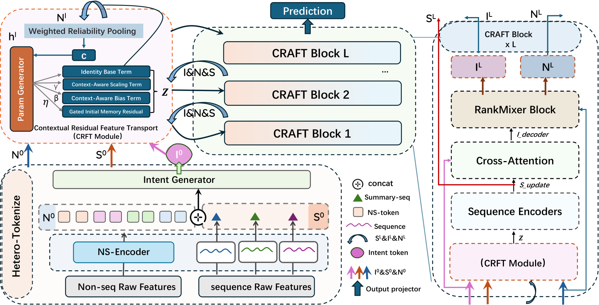
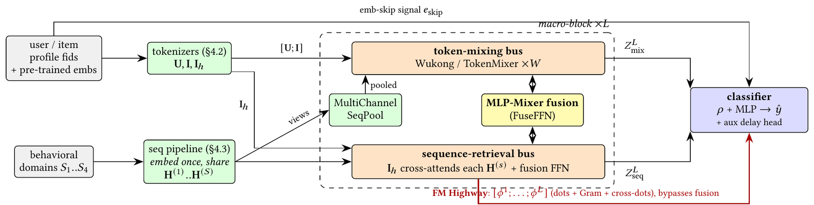
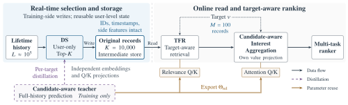

Contents · 7 sections
1What problem is it solving?2The big picture3Up close: what each of the three steps does4Experiments: is it really better?5Limitations as I see them6How a ranking team could try this7Bottom lineSHARE
Teams working on feature interaction in ranking models can spend ten minutes on the architecture, but need not rush to reproduce it. The idea is clear, the implementation is simple, and it is already fully deployed in Kuaishou's recruitment business; the problem is that the offline gain is small, and the paper's efficiency claim does not hold under its own configuration. The core idea in one sentence: instead of letting 32 feature tokens mix with each other directly, use 16 learnable "hub" vectors to summarize the tokens through attention, run self-attention among the hubs, and then let each token read back what it needs from the hubs. Key numbers: average AUC over four tasks is 0.0015 higher than the strongest baseline, TokenMixer (0.8256 vs 0.8241), while parameters drop from 156.9M to 142.4M; removing the interaction among hubs drops average AUC back to 0.8232; and in a 7-day online A/B on 7.2% of traffic, resume-submission conversion rose by 5.48%.
What problem is it solving?
Today's ranking models often group features by meaning and compress each group into one vector, called a feature token. Recent architectures such as RankMixer and TokenMixer replace self-attention with lightweight mixing operations that let these tokens exchange information, which is hardware-efficient and easy to scale up.
The paper's starting point is that recommendation tokens are unlike language tokens: they differ a great deal from one another. An illustrative look at a few kinds of tokens in the recruitment setting:
| Illustrative token | Content | Useful when interacting with |
|---|---|---|
| User job intent | Looking for "logistics / driver" jobs | Job category, salary |
| Click history sequence | The last 20 job videos watched | Current job category |
| Job category | Parcel sorter | Job intent, click history |
| Context | 9 p.m., on the commute | Mostly modulates time-sensitive features |
| Statistical feature | This job's application rate over the last 7 days | Weakly related to most tokens |
Useful interactions are sparse and differ from sample to sample. Take RankMixer: it splits each token into T segments, and the h-th new token is assembled from the h-th segment of every token, so the mixing pattern is fixed and does not depend on the sample's content. Mixing all tokens directly in one flat space leaves the model to discover "who should interact with whom" from data alone, which the authors argue wastes parameters.
HubMixer's answer is to add an intermediate layer: first route tokens into a few learnable "hubs" (the paper's own term for a set of learnable query vectors), interact in hub space, then write back into the tokens. The idea comes from multimodal work such as Q-Former (which uses a few learnable query vectors to extract information from image features) and from OneRec's use of query vectors to compress long sequences; the difference is that HubMixer applies it to ordinary feature tokens and, at the end, writes the information back into each token.
The big picture
![HubMixer's overall architecture. Top: the pipeline of feature grouping, tokenization, L stacked HubMixer blocks and multi-task output. Bottom: the three steps of one block. ① Hub induction: a residual generated from the token average by a two-layer network is added to the base hubs, then the hubs act as queries in cross-attention over the tokens. ② Hub interaction: self-attention among the hubs. ③ Token-conditioned readout: each token acts as a query in cross-attention over the interacted hubs, and the result is multiplied by per-dimension scaling factors and added back to the original token.](../../../figs/2026-09-01/personalization/2608.27991/fig1_arch.png)
| Step | What it does | Why it is needed |
|---|---|---|
| 0. Build this sample's hubs | 16 base hub vectors plus a residual computed from the average of this sample's tokens | Give the hubs some sample information so they are not fully fixed templates |
| 1. Hub induction | Cross-attention with hubs as queries and tokens as keys and values | Each hub picks and summarizes the tokens relevant to it, based on content |
| 2. Hub interaction | Self-attention among the 16 hubs | High-order interaction on information that has already been summarized |
| 3. Token-conditioned readout | Each token acts as a query and reads from the interacted hubs | Each token reads the part it needs, keeping its field identity |
| 4. Residual write-back | Multiply the readout by per-dimension scaling factors and add it back to the original token | Control the size of the update, which keeps deep stacks stable |
| 5. Multi-task output | Concatenate the 32 tokens of the last layer and feed four task heads | Downstream still sees each field's own representation |
The experimental configuration is 32 tokens, 16 hubs and 2 layers, and all mixing-style models use the same number of tokens and layers.
Up close: what each of the three steps does
How does hub induction pick tokens? Each hub is a query vector that computes an attention score with each of the 32 tokens, applies softmax and takes the weighted sum. Illustration: with 1 hub and 3 tokens scoring 2, 1 and 0, softmax gives about 0.67, 0.24 and 0.09, so this hub's content comes mainly from the first token. The scores depend on token content, so the same hub summarizes different token combinations for different samples, which is what the paper calls "sample-specific routing".
Why add a sample residual to the hubs first? If the hubs were completely fixed, they would ask every sample the same set of questions. The authors average the 32 tokens, pass the result through a two-layer network (Swish activation) to produce a 16×d residual, and add it to the base hubs, so the questions themselves vary with the sample.
Why is hub interaction necessary? Induction only "summarizes": each hub sees only the tokens it picked. The second step runs self-attention among the 16 hubs, so that, for example, a "job intent hub" and a "job semantics hub" exchange information, which is what forms combined signals across feature groups. The ablation supports this: removing this step lowers AUC on all four tasks, with the average falling from 0.8256 to 0.8232, the largest drop of any change.
Why read out per token instead of pooling the hubs into one vector? The simplest approach is to average the 16 hubs into one global vector and add it to every token. But then every token receives the same information. Token-conditioned readout lets each token use itself as the query and take a customized mix from the hubs: a job-category token may read more from the "job intent" hub, a context token more from a "timeliness" hub. The readout is then multiplied by a learnable per-dimension scaling factor (the paper calls it LayerScale) and added back to the original token. Illustration: with only 2 hubs, a job-category token attends to them with 0.9 and 0.1, a context token with 0.2 and 0.8, so the two tokens read completely different content from the same hubs; if one dimension's scaling factor is 0.1, a readout value of 2.0 adds only 0.2 to the original token in that dimension. This way the readout does not suddenly overwrite the original token, and stacking layers is less likely to diverge. In the ablation, replacing it with pooling and adding to all tokens gives an average AUC of 0.8247, 0.0009 below the full model and a smaller loss than removing hub interaction. This shows the global information is useful by itself, and per-token customization is a second layer of gain.
Why is the output still 32 tokens? Because the four tasks (click, effective view, interaction, resume submission) depend on different feature combinations, keeping each token's own representation lets each task head take what it needs. The 32 tokens of the last layer are concatenated directly and fed into the multi-task module, and the loss is a weighted sum of four binary cross-entropies.
Experiments: is it really better?
The data is one month of logs from Kuaishou's short-video recruitment business, over 1 billion samples, with the business covering about 40 million daily active users. The four targets go from shallow to deep: click, effective view, interaction, resume submission. All models share the same features, embedding dimension, optimizer, batch size and task weights.
| Model | Click | Effective view | Interaction | Resume submission | Avg. AUC | Params |
|---|---|---|---|---|---|---|
| DCNv2 | 0.8194 | 0.8468 | 0.8361 | 0.7825 | 0.8212 | 157.5M |
| Wukong | 0.8183 | 0.8461 | 0.8365 | 0.7822 | 0.8208 | 154.6M |
| RankMixer | 0.8221 | 0.8495 | 0.8389 | 0.7845 | 0.8238 | 155.1M |
| TokenMixer | 0.8227 | 0.8491 | 0.8394 | 0.7852 | 0.8241 | 156.9M |
| HubMixer | 0.8253 | 0.8507 | 0.8401 | 0.7864 | 0.8256 | 142.4M |
First, the gap between the two families of baselines: classic crossing architectures such as DCNv2 and Wukong average around 0.821, while RankMixer and TokenMixer average around 0.824, which shows that on this data token-mixing architectures are already clearly better than explicit crossing. HubMixer is best on all four tasks with about 9% fewer parameters than TokenMixer. This shows that under the same token setup, the hub structure is at least no worse than flat mixing and uses fewer parameters. But the absolute gain is small: against TokenMixer, click is +0.0026 and resume submission only +0.0012. The paper reports no variance across runs and no significance test, so whether a gap of this size is stable cannot be judged from the paper.
The hub-count experiment shows that 16 is basically enough:
| Number of hubs | Avg. AUC | Params |
|---|---|---|
| 4 | 0.8238 | 136.1M |
| 8 | 0.8248 | 138.3M |
| 16 (default) | 0.8256 | 142.4M |
| 32 | 0.8258 | 150.8M |
Going from 16 to 32 adds only 0.0002 average AUC for 8.4M more parameters, so the authors choose 16. Notably, with 4 hubs the average AUC is 0.8238, level with RankMixer, using 19M fewer parameters.
The authors also run two representation analyses against the strongest baseline, TokenMixer. The first looks at how much each block changes the direction of each token, measured as the cosine distance between input and output (1 − cosine similarity).

This shows HubMixer writes more new information into the tokens. But changing more is not the same as changing well, so the second analysis is linear probing: freeze the trained backbone and train only a linear classifier on each token (or on the 32 tokens concatenated), then look at AUC.

This shows task-relevant information in HubMixer's tokens is easier to read out linearly, which the authors take as evidence that its gain is not just "bigger perturbation".
The online A/B ran for 7 days on 7.2% of traffic; the primary metric, resume-submission conversion, rose by 5.48% with statistical significance, and the model was then fully deployed.
Limitations as I see them
First, the efficiency claim does not hold under the paper's own configuration. The paper says the cost of the two cross-attentions grows with T×H instead of T², but that requires far fewer hubs than tokens. In the experiments T=32 and H=16, only a factor of two apart. Counting the query–key pairs for which attention scores must be computed: induction is 32×16=512, hub interaction 16×16=256, readout 32×16=512, for a total of 1280; direct pairwise self-attention over 32 tokens is 32×32=1024. So under this configuration the hub structure actually needs more attention computation. The paper compares against TokenMixer rather than self-attention and reports no FLOPs, latency or throughput, so "more efficient" shows up only in parameter count.
Second, the offline gain is small and lacks evidence of stability. Average AUC is only 0.0015 above TokenMixer, the paper reports no results over multiple random seeds, and it does not say whether the baselines were tuned. The parameter counts are totals with no split between embedding tables and interaction layers, so it is unclear where the 14.5M saving comes from.
Third, several things in the analysis and the online test are unclear. The concatenated linear-probe AUCs (0.832 for click, 0.855 for resume submission) are higher than the full model's own AUCs (0.8253 and 0.7864), which means the probe used other data or another setup, but the paper does not explain this, making the 0.832 vs 0.794 gap hard to relate to the main table. The online 5.48% is relative to a "base model" that the paper does not identify as TokenMixer, RankMixer or something else, so it is impossible to judge how much of it comes from HubMixer itself.
How a ranking team could try this
- If production already uses a token architecture such as RankMixer or TokenMixer, replace one of its layers with the hub structure, starting with a hub count of a quarter of the token count (in the paper, 4 hubs already match RankMixer). Only then is the attention computation actually lower than pairwise interaction.
- Run two ablations first: remove hub interaction, and replace token-conditioned readout with pooling. If the former barely drops, the gain in your setting does not come from this structure.
- Evaluate with at least 3 random seeds and move forward only when the AUC gap exceeds the seed-to-seed variation.
- Record parameter counts (split between embedding tables and interaction layers), FLOPs and online latency together, rather than parameter count alone.
- In the online A/B, use the current production architecture as the control and compare on identical features, so gains from feature or training changes are not credited to the architecture.
Bottom line
HubMixer brings Q-Former-style "summarize with a few query vectors, then write back" to feature interaction in ranking. The structure is sensible and fully deployed, but the offline gain is only one to two thousandths, and the efficiency advantage does not exist at T=32, H=16; it is best treated as an alternative architecture that is cheap to try.
| Dimension | Assessment |
|---|---|
| Importance of the problem | Medium-high. The feature interaction structure is a core component of ranking models |
| Novelty of the method | Medium. Using learnable query vectors for feature interaction and writing back to tokens is a novel combination, but every component is common |
| Experimental evidence | Medium-low. A single dataset, no variance, no FLOPs or latency; the online control is not identified |
| Engineering cost | Low. Three attention modules that can replace an existing token-mixing layer |
| Worth trying? | Worth a cheap try, with the hub count clearly below the token count |
| Where it fits | Ranking models that already tokenize features and use a RankMixer- or TokenMixer-style architecture |
How did this read for you?
Hoot made a note. Thanks for the feedback.
One tap, no sign-in; tap again to undo. Only anonymous counts are kept, never who you are.
Related papersMore from Paper Daily
 Generative · 2026-10-24OneLatent: Latent Reasoning for Efficient Foundation Recommendation ModelsWhen a large language model serves as a recommendation foundation model and first writes a natural-language reasoning trace before outputting the next item's semantic ID, the reasoning text is far longer than the semantic ID and holds back both decoding time and throughput. OneLatent appends 3 fixed special tokens after the user context and trains in several steps. First the model learns to repro…
Generative · 2026-10-24OneLatent: Latent Reasoning for Efficient Foundation Recommendation ModelsWhen a large language model serves as a recommendation foundation model and first writes a natural-language reasoning trace before outputting the next item's semantic ID, the reasoning text is far longer than the semantic ID and holds back both decoding time and throughput. OneLatent appends 3 fixed special tokens after the user context and trains in several steps. First the model learns to repro… Personalization · 2026-10-28Unified Heterogeneous Feature Interaction via Effective-Rank Scaling for Recommender SystemsMost production ranking models squeeze the user's behavior sequence into one fixed vector before it reaches the feature-interaction module, so later interaction layers can no longer see which clicks or add-to-carts actually happened. Alibaba Taobao's HiRank keeps the behavior sequence alive through every layer of the backbone, and builds the retrieval query over long-term history from the user's…
Personalization · 2026-10-28Unified Heterogeneous Feature Interaction via Effective-Rank Scaling for Recommender SystemsMost production ranking models squeeze the user's behavior sequence into one fixed vector before it reaches the feature-interaction module, so later interaction layers can no longer see which clicks or add-to-carts actually happened. Alibaba Taobao's HiRank keeps the behavior sequence alive through every layer of the backbone, and builds the retrieval query over long-term history from the user's…
Personalization · 2026-09-30HELIX: Purified and Unified - Rethinking Feature Interaction and Sequence Modeling for Large-Scale RecommendationDeep dive: HELIX: Purified and Unified - Rethinking Feature Interaction and Sequence Modeling for Large-Scale Recommendation.
Personalization · 2026-09-04From Feature Interaction to Feature Transport - A Unified Block for Scalable Recommendation ModelsDeep dive: From Feature Interaction to Feature Transport - A Unified Block for Scalable Recommendation Models.
Personalization · 2026-08-19UniDot: A Unified Network for Sequence Modeling and Feature Interaction in Large-scale RecommendationDeep dive: UniDot: A Unified Network for Sequence Modeling and Feature Interaction in Large-scale Recommendation.
Personalization · 2026-10-22ECHO: Efficient Cascade with Homogeneous Operators for Distillation-Guided 100K-Sequence ModelingECHO makes 100K-event histories affordable by retaining reusable original records before candidate-aware retrieval. A full-history teacher supervises selection, while retrieval and aggregation share relevance parameters. Kuaishou reports a 0.613% increase in app usage time in an online test. Personalization · 2026-11-05Auditing a Model-Hub Benchmark: Data Quality, Training Budgets, and Side Information in HuggingBenchWorth reading for anyone who evaluates recommenders, because the problem it uncovers is not in the models but in how the data files map onto each other. In HuggingBench, the public benchmark for recommending Hugging Face models and datasets, three of the four knowledge graphs that describe the items have their item IDs matched wrongly, so knowledge-graph recommenders have been reading another ite…
Personalization · 2026-11-05Auditing a Model-Hub Benchmark: Data Quality, Training Budgets, and Side Information in HuggingBenchWorth reading for anyone who evaluates recommenders, because the problem it uncovers is not in the models but in how the data files map onto each other. In HuggingBench, the public benchmark for recommending Hugging Face models and datasets, three of the four knowledge graphs that describe the items have their item IDs matched wrongly, so knowledge-graph recommenders have been reading another ite… Personalization · 2026-10-23Progressive Learning from Content to Relevance to Personalization for CTR PredictionTaobao search CTR models mainly remember historical clicks through item IDs, so the same item with a different main image is almost indistinguishable to the model. FineSID turns each item image into 30 discrete codes across four VAR tokenizer scales from 1×1 to 4×4, tokenizes titles and OCR text by field, and looks them all up like ordinary ID features; the shared network is first trained on quer…
Personalization · 2026-10-23Progressive Learning from Content to Relevance to Personalization for CTR PredictionTaobao search CTR models mainly remember historical clicks through item IDs, so the same item with a different main image is almost indistinguishable to the model. FineSID turns each item image into 30 discrete codes across four VAR tokenizer scales from 1×1 to 4×4, tokenizes titles and OCR text by field, and looks them all up like ordinary ID features; the shared network is first trained on quer…
Discussion
Add experiment details, reproduction notes or a different take. Requires a GitHub sign-in.
Loading the discussion…